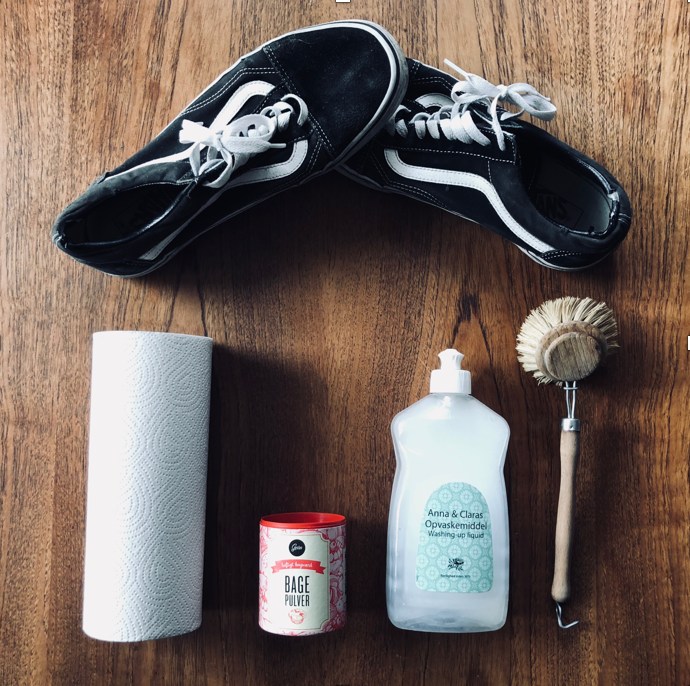

Guide - Sådan renser du dine sneakers
Vi behandler vores sneakers på forskellige måde. Der er dem som bruger dem til de er udtrådte - andre passer og plejer dem, som deres kæreste eje. Til den sidste nævnte del, har vi her udviklet en guide til hvordan du nemt og billigt kan rengøre dine sneakers, med ting de fleste har under vasken.
Hvad skal du bruge:
- Opvaskemiddel
- Blød børste
- Køkkenrulle
- Bagepulver
- snavsede sko
Sådan renser du dem:
- Fjern snørebånd og andre aftaglige ting
- Bland opvaskemiddel og vand
- Vask skoen udvendig og indvendig med børsten
- Fyld skoeen med køkkenrulle
- Lad skoeen lufttørre
- Når alt er tørt sættes snørrebåndene i igen
- Drys lidt bagepulver ind i skoeen for at fjerne eventuel lugt
og med et trylleslag har du et par sneakers som er så godt som nye!